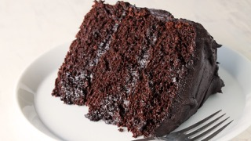

Chocolate Cake

Description
It's a Chocolate Cake. Period
Ingredients
- 1 (18.25 ounce) package devil's food cake mix
- 1 (5.9 ounce) package instant chocolate pudding mix
- 1 cup sour cream
- 1 cup vegetable oil
- ½ cup warm water
- 4 eggs
- 2 cups semisweet chocolate chips
Steps
- Preheat the oven to 350 degrees F (175 degrees C). Generously grease a 12-cup Bundt pan.
- Mix together cake mix, pudding mix, sour cream, oil, water, and eggs in a large bowl until well-blended. Stir in chocolate chips; pour batter into the prepared Bundt pan.
- Bake in the preheated oven until top is springy to the touch and a toothpick inserted into center of cake comes out clean, 50 to 55 minutes.
- Cool cake thoroughly in the pan for at least 1 1/2 hours before inverting it onto a plate.